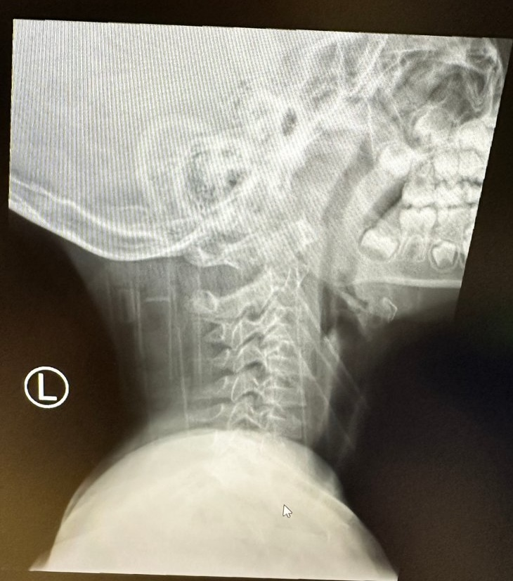

Paediatric OPD
Evelyn, an 8-year-old girl, was referred by AED for neck physiotherapy 3 days ago. Today is her 1st OPD physio session; she is brought by her mother.
Neck sprain after jumping on trampoline
Neck tilted in torticollis
4 limbs power full, walk unaided
XR C spine lateral view: no obvious fracture
Mx: DC home, refer OPD neck physio
XR C spine lateral view in AED:

Evelyn reported that her neck was less painful now, but felt some stiffness when moving her neck.
Neck tilted to left side, rotated to right side, and slightly flexed forward
You are the physiotherapist in-charge of Evelyn at her 1st OPD neck physiotherapy session.
Tap an item to reveal its finding, then select all that you consider appropriate at this visit.